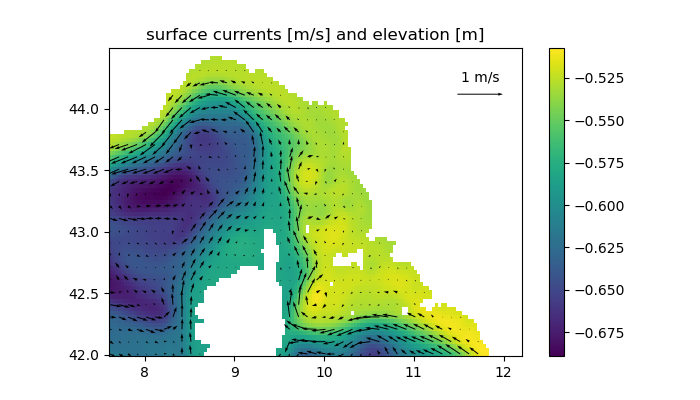

grid_fname = "LS2v.nc"
if !isfile(grid_fname)
download("https://dox.ulg.ac.be/index.php/s/J9DXhUPXbyLADJa/download",grid_fname)
end
fname = "roms_his.nc"
if !isfile(fname)
download("https://dox.ulg.ac.be/index.php/s/17UWsY7tRNMDf4w/download",fname)
end"roms_his.nc"using PyPlot, ROMS
using ROMS, PyPlot, NCDatasets, GeoDatasets
using Statistics
datadir = expanduser("~/ROMS-implementation-test")
datadir = expanduser(".")
ds_grid = NCDataset(joinpath(datadir,"LS2v.nc"));
lon = ds_grid["lon_rho"][:,:];
lat = ds_grid["lat_rho"][:,:];
h = ds_grid["h"][:,:];
mask_rho = ds_grid["mask_rho"][:,:];
clf();
hmask = copy(h)
hmask[mask_rho .== 0] .= NaN;
pcolormesh(lon,lat,hmask);
colorbar(orientation="horizontal")
gca().set_aspect(1/cosd(mean(lat)))
title("smoothed bathymetry [m]");# instance to plot
n = 1
ds = NCDataset(fname)
#ds = NCDataset(joinpath(datadir,"clim2019.nc"))
#ds = NCDataset(joinpath(datadir,"Simulation1","roms_his.nc"))
temp = nomissing(ds["temp"][:,:,end,n],NaN);
temp[mask_rho .== 0] .= NaN;
if haskey(ds,"time")
# for clim files
time = ds["time"][:]
else
# for others files
time = ds["ocean_time"][:]
end
clf();
pcolormesh(lon,lat,temp)
gca().set_aspect(1/cosd(mean(lat)))
colorbar(orientation="horizontal");
title("sea surface temperature [°C]")zeta = nomissing(ds["zeta"][:,:,n],NaN)
u = nomissing(ds["u"][:,:,end,n],NaN);
v = nomissing(ds["v"][:,:,end,n],NaN);
mask_u = ds_grid["mask_u"][:,:];
mask_v = ds_grid["mask_v"][:,:];
u[mask_u .== 0] .= NaN;
v[mask_v .== 0] .= NaN;
zeta[mask_rho .== 0] .= NaN;
u_r = cat(u[1:1,:], (u[2:end,:] .+ u[1:end-1,:])/2, u[end:end,:], dims=1);
v_r = cat(v[:,1:1], (v[:,2:end] .+ v[:,1:end-1])/2, v[:,end:end], dims=2);
size(u_r), size(v_r), size(mask_rho)
clf();
pcolormesh(lon,lat,zeta)
r = 3;
i = 1:r:size(lon,1);
j = 1:r:size(lon,2);
q = quiver(lon[i,j],lat[i,j],u_r[i,j],v_r[i,j])
quiverkey(q,0.9,0.85,1,"1 m/s",coordinates="axes")
title("surface currents [m/s] and elevation [m]");
colorbar(orientation="horizontal");
gca().set_aspect(1/cosd(mean(lat)))
opt = (
Tcline = 50, # m
theta_s = 5, # surface refinement
theta_b = 0.4, # bottom refinement
nlevels = 32, # number of vertical levels
Vtransform = 2,
Vstretching = 4,
)
hmin = minimum(h)
hc = min(hmin,opt.Tcline)
z_r = ROMS.set_depth(opt.Vtransform, opt.Vstretching,
opt.theta_s, opt.theta_b, hc, opt.nlevels,
1, h);
temp = nomissing(ds["temp"][:,:,:,n],NaN);
mask3 = repeat(mask_rho,inner=(1,1,opt.nlevels))
lon3 = repeat(lon,inner=(1,1,opt.nlevels))
lat3 = repeat(lat,inner=(1,1,opt.nlevels))
temp[mask3 .== 0] .= NaN;
i = 20;
clf()
contourf(lat3[i,:,:],z_r[i,:,:],temp[i,:,:],40)
ylim(-300,0);
xlabel("latitude")
ylabel("depth [m]")
title("temperature at $(round(lon[i,1],sigdigits=4)) °E")
colorbar(orientation="horizontal");Vtransform = 2 ROMS-UCLA
igrid = 1 at horizontal RHO-points
Vstretching = 4 Shchepetkin (2010)
kgrid = 0 at vertical RHO-points
theta_s = 5
theta_b = 0.4
hc = 2.0
S-coordinate curves: k, s(k), C(k)
32 -1.562500000000e-02 -5.060164946710e-05
31 -4.687500000000e-02 -4.572401105559e-04
30 -7.812500000000e-02 -1.280298055894e-03
29 -1.093750000000e-01 -2.539560500182e-03
28 -1.406250000000e-01 -4.265266261424e-03
27 -1.718750000000e-01 -6.498792311199e-03
26 -2.031250000000e-01 -9.293584054181e-03
25 -2.343750000000e-01 -1.271634639800e-02
24 -2.656250000000e-01 -1.684851356914e-02
23 -2.968750000000e-01 -2.178801812466e-02
22 -3.281250000000e-01 -2.765138117566e-02
21 -3.593750000000e-01 -3.457614600596e-02
20 -3.906250000000e-01 -4.272367537770e-02
19 -4.218750000000e-01 -5.228232795041e-02
18 -4.531250000000e-01 -6.347102015626e-02
17 -4.843750000000e-01 -7.654316490419e-02
16 -5.156250000000e-01 -9.179095542844e-02
15 -5.468750000000e-01 -1.095499286006e-01
14 -5.781250000000e-01 -1.302036934689e-01
13 -6.093750000000e-01 -1.541886431904e-01
12 -6.406250000000e-01 -1.819983765227e-01
11 -6.718750000000e-01 -2.141874325067e-01
10 -7.031250000000e-01 -2.513737824031e-01
9 -7.343750000000e-01 -2.942393202666e-01
8 -7.656250000000e-01 -3.435273436662e-01
7 -7.968750000000e-01 -4.000357194613e-01
6 -8.281250000000e-01 -4.646040954176e-01
5 -8.593750000000e-01 -5.380931709292e-01
4 -8.906250000000e-01 -6.213537270252e-01
3 -9.218750000000e-01 -7.151829201676e-01
2 -9.531250000000e-01 -8.202653975901e-01
1 -9.843750000000e-01 -9.370972868551e-01tempi = ROMS.model_interp3(lon,lat,z_r,temp,lon,lat,[-200])
mlon,mlat,mdata = GeoDatasets.landseamask(resolution='f', grid=1.25)
clf();
pcolormesh(lon,lat,tempi[:,:,1])
colorbar(orientation="horizontal");
ax = axis()
contourf(mlon,mlat,mdata',[0.5, 3],colors=["gray"])
axis(ax)
gca().set_aspect(1/cosd(mean(lat)))
title("temperature at 200 m [°C]")[ Info: Downloading file 'lsmask_1.25min_f.bin' from 'https://raw.githubusercontent.com/matplotlib/basemap/v1.2.2rel/lib/mpl_toolkits/basemap/data/lsmask_1.25min_f.bin' with cURL.section_lon = LinRange(8.18, 8.7,100);
section_lat = LinRange(43.95, 43.53,100);
using Interpolations
function section_interp(v)
itp = interpolate((lon[:,1],lat[1,:]),v,Gridded(Linear()))
return itp.(section_lon,section_lat)
end
section_temp = mapslices(section_interp,temp,dims=(1,2))
section_z = mapslices(section_interp,z_r,dims=(1,2))
section_x = repeat(section_lon,inner=(1,size(temp,3)))
clf()
contourf(section_x,section_z[:,1,:],section_temp[:,1,:],50)
ylim(-500,0)
colorbar()
xlabel("longitude")
ylabel("depth")
title("temperature section [°C]");
ax2 = gcf().add_axes([0.5,0.2,0.2,0.15])
ax2.pcolormesh(lon,lat,temp[:,:,end])
axis("on")
ax2.set_aspect(1/cosd(mean(lat)))
ax2.plot(section_lon,section_lat,"m")
savefig("temp_vsection.png");